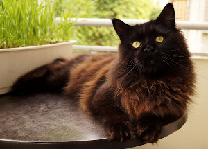
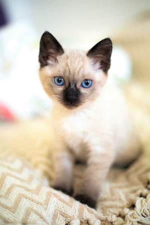

Tipos de gatos
Maine Coon
El Maine Coon es conocida por ser la raza de gato doméstico más grande del mundo. Tiene una apariencia física distintiva y valiosas habilidades de caza. Es una de las razas naturales más antiguas de América del Norte, específicamente nativa del estado de Maine como su nombre lo sugiere, donde es considerado su gato oficial.
Siamés
Los orígenes del gato siamés son imprecisos, aunque hay antecedentes que en Siam (ahora Tailandia), estos animales convivieron con el rey y su familia, siendo ejemplares exclusivos de la realeza. Este privilegio se debe a que le concedían un carácter puro, ya que al nacer esta especie es de color blanco color sagrado en Siam que lo llevó a tener su gran popularidad en esos tiempos.
